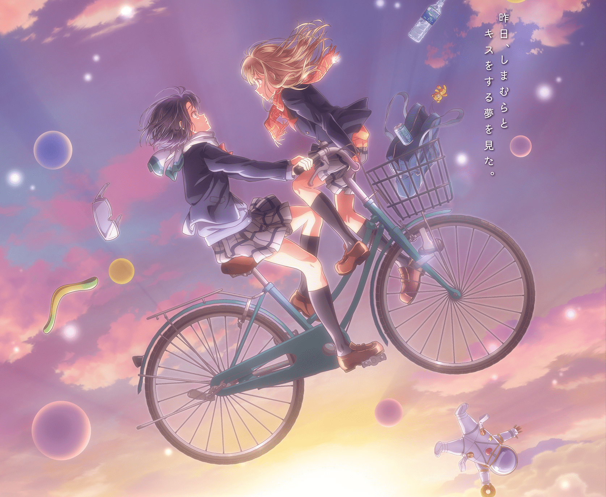

最近「安達としまむら」をみてる。
友達についての考え方ですごく共感できた作品だった。
百合作品としてもすごく面白くて今季NO1だ。
特に10話は深く刺さった回でした
※※※※注意です※※※※
この記事はひどく鬱の時のものです。
僕のイメージとか知りませんが、おそらく崩れます。
読むとなんだこいつ気持ち悪とかなります。
ひどい駄文です。
運命の川に長く浸れば
思い返せば僕は友達には不自由なく暮らしてきた。
幼稚園のころも、小学生のころも、そのあとも。
普通に笑いあったし、喧嘩もした。
でも、「いまその人たちと同じ顔して会えるのか、話し合えるのか。」と聞かれると首を縦に触れない。
結構仲良かったのにね。なんでだろう。ずっとこれから先も友達だと思ってたのに。
もちろんすべての友達が離れてしまったわけではなくて、仲良くしてくれている人もいる。
そのことを忘れずに生きたい。
でも少し寂しい。
ダウナーな日
いわゆる躁鬱の鬱状態ですかね。そんなに重症じゃないけど…
明日の天気が雨で少し嫌な気分になる。そんな程度のダウナーな日。
こうなると考えが嫌な方向に向きだす。
友達の話もそうだけど自分のコンプレックスとかそんなことばかり考える。
こうして文字に起こすのははじめてだけどどうなるのかな。
怖い反面興味がある。後から見返して恥ずかしくなって、そんなこと目に見えてるのにね。
多分、僕はメンヘラなんだろう。最悪だ。
Twitterでよく見る人と同じとかうげー。
あーAPEXも引退したくなってきた。
だってつらいよFPSって。どんなに頑張っても結局僕は無理だし。
プロゲーマーになった人もいるらしいけど、普通の人が同じだけ努力したほうが強いに決まってるじゃん。
もういやだ
考えたくない
自分を否定すると大切な人を否定することになるのが嫌いだ。
すべての関係断ち切って楽になりたいと思うこともある。
けどむりだ。
多分僕は糸の上に立っている。
それが切れたらもう落ちるだけ。それももうそろそろかもしれない
いやだ。そんなことを考える自分が醜悪で最低だ。
最低な人間だ。
その前にはやくなんとかしないと。
どうする。またあらたに依存先でも探すのか。
そうして綱渡りして。でもきれた糸はもどらない。
たぶん公開したら後悔する。あはは
でもいいや。読んで僕のイメージが変わったとしたら、どんな反応になるだろう。
好奇心のほうが強い。
Twitterにはあげません。ヒドイ駄文だしだれにも読んでほしくない。
壊したいけど壊れてほしくない。ダブルバインドのなかで悩んでます。
ただ残しておきたい。trueにしておくのは嫌なので
ここまで読んでくれてありがとう。